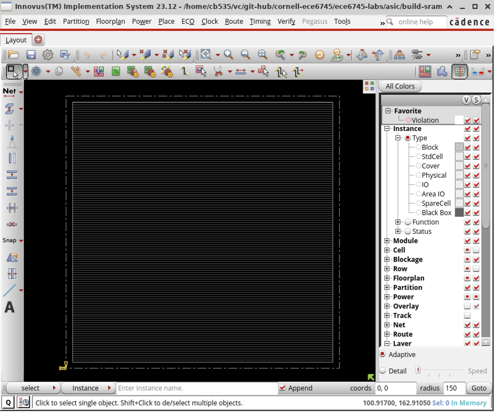
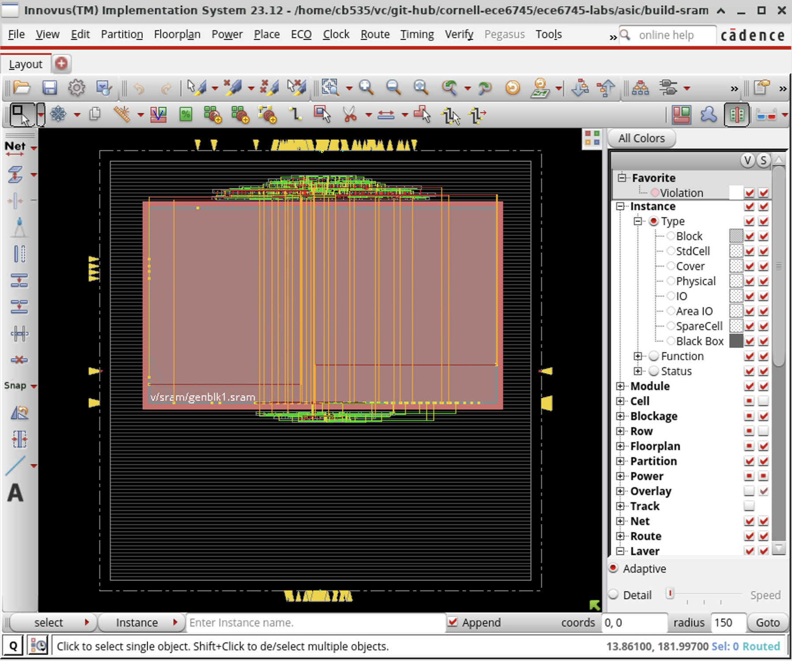
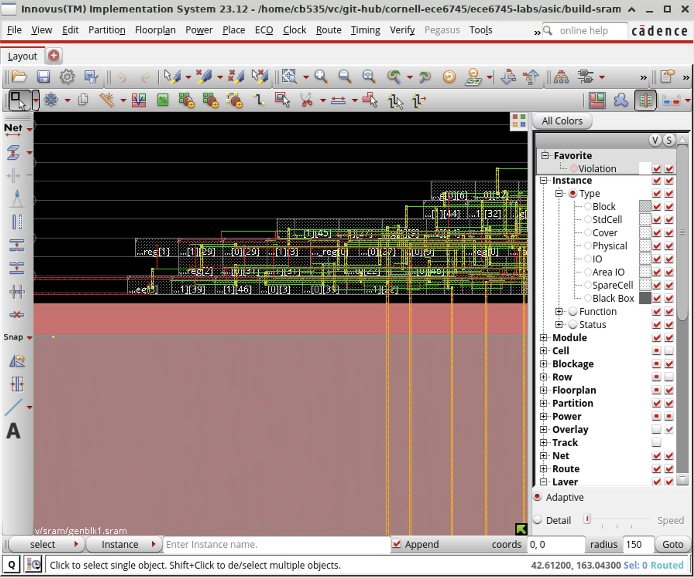
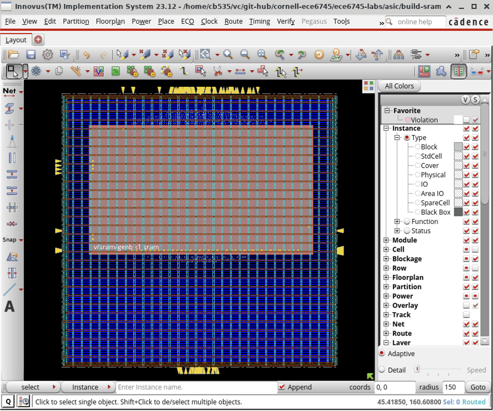
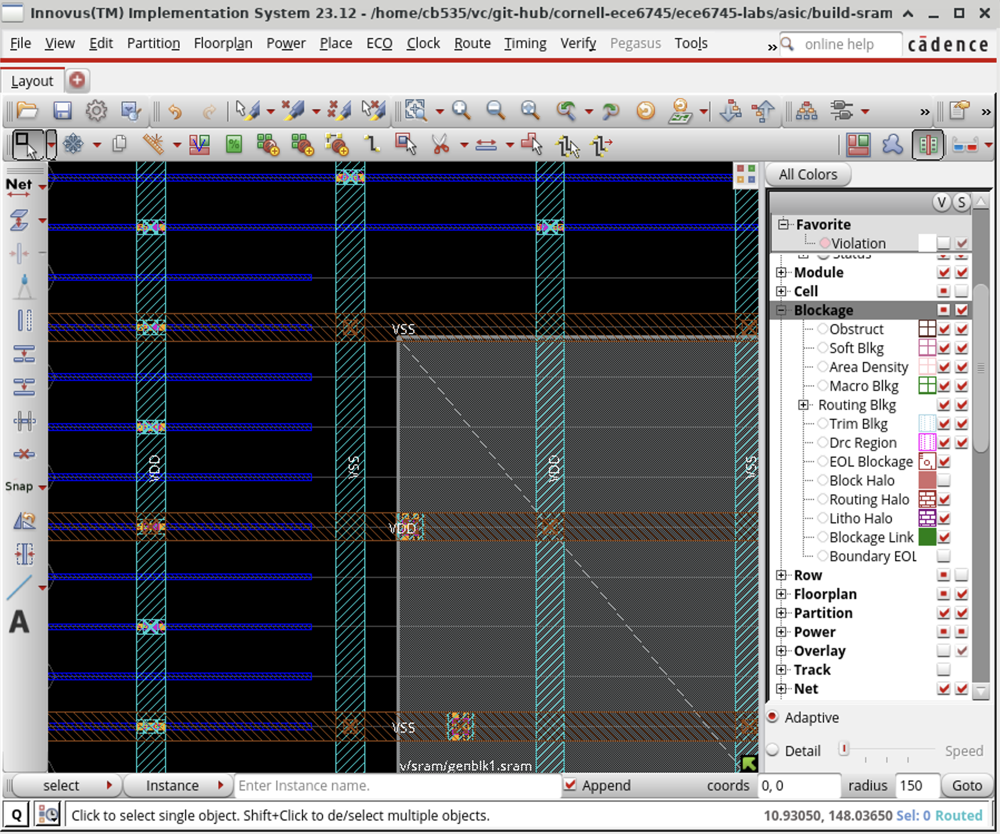
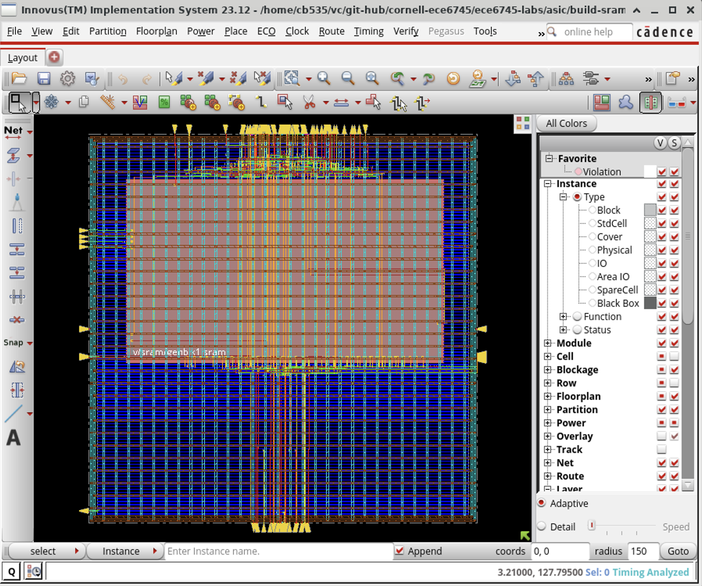
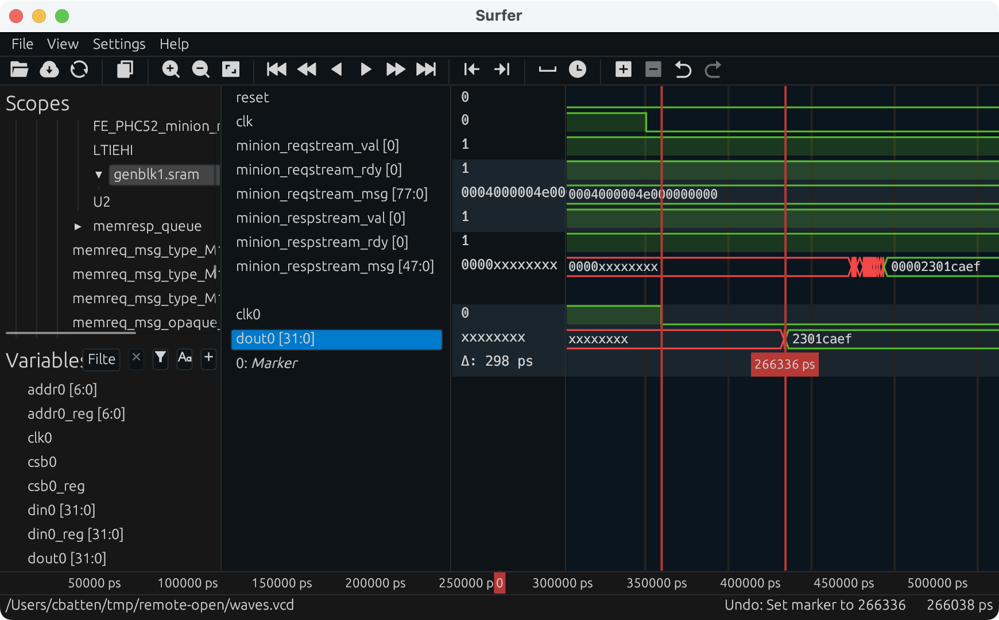

ECE 6745 Tutorial 10: SRAM Generators
Small memories can be easily synthesized using flip-flop or latch standard cells, but synthesizing large memories can significantly impact the area, energy, and timing of the overall design. ASIC designers often use SRAM generators to "generate" arrays of memory bitcells and the corresponding peripheral circuitry (e.g., address decoders, bitline drivers, sense amps) which are combined into what is called an "SRAM macro". These SRAM generators are parameterized to enable generating a wide range of SRAM macros with different numbers of rows, columns, and column muxes, as well as optional support for partial writes, built-in self-test, and error correction. Similar to a standard-cell library, an SRAM generator must generate not just layout but also all of the necessary views to capture logical functionality, timing, geometry, and power usage. These views can then by used by the ASIC tools to produce a complete design which includes a mix of both standard cells and SRAM macros.
The tutorial will first describe how to use the open-source OpenRAM memory generator to generate various views of an SRAM macro. You will then see how to use an SRAM in an RTL model, how to generate the corresponding SRAM macro, and then how to push a design which uses an SRAM macro through the manual ASIC flow. Finally, you will see how to use pyhflow to automate this process. This tutorial assumes you have already completed the tutorials on Linux, Git, PyMTL, Verilog, ASIC front-end flow, ASIC back-end flow, and ASIC automated ASIC flow.
The first step is to access ecelinux. Use VS Code to log into a
specific ecelinux server and then use Microsoft Remote Desktop to log
into the same server. Once you are at the ecelinux prompt, source the
setup script, source the GUI setup script, clone this repository from
GitHub, and define an environment variable to keep track of the top
directory for the project.
% source setup-ece6745.sh
% source setup-gui.sh
% mkdir -p $HOME/ece6745
% cd $HOME/ece6745
% git clone git@github.com:cornell-ece6745/ece6745-tut10-sram tut10
% cd tut10
% export TOPDIR=$PWD
1. OpenRAM Memory Generator
Just as with standard-cell libraries, acquiring real SRAM generators is a complex and potentially expensive process. It requires gaining access to a specific fabrication technology, negotiating with a company which makes the SRAM generator, and usually signing multiple non-disclosure agreements. The OpenRAM memory generator is based on the same "fake" 45nm technology that we are using for the Nangate standard-cell library. The "fake" technology is representative enough to provide reasonable area, energy, and timing estimates for our purposes. In this section, we will take a look at how to use the OpenRAM memory generator to generate various views of an SRAM macro.
An SRAM generator takes as input a configuration file which specifies the
various parameters for the desired SRAM macro. Let's go ahead and create
such a configuration file for a small SRAM. For this section of the
tutorial, we will work in the openram subdirectory. The name of the
configuration file should be SRAM_32x128_1rw_cfg.py.
The configuration file should look like this:
use_conda = False
num_rw_ports = 1
num_r_ports = 0
num_w_ports = 0
word_size = 32
num_words = 128
num_banks = 1
words_per_row = 4
write_size = 8
tech_name = "freepdk45"
process_corners = ["TT"]
supply_voltages = [1.1]
temperatures = [25]
route_supplies = True
check_lvsdrc = False
output_path = "SRAM_32x128_1rw"
output_name = "SRAM_32x128_1rw"
instance_name = "SRAM_32x128_1rw"
In this example, we are generating a single-ported SRAM which has 128
rows and 32 bits per row for a total capacity of 4096 bits or 512B. This
size is probably near the cross-over point where you might transition
from using synthesized memories to SRAM macros. OpenRAM will take this
configuration file as input and generate many different views of the SRAM
macro including: schematics (.sp), layout (.gds), a Verilog
behavioral model (.v), abstract logical, timing, power view (.lib),
and a physical view (.lef). These views can then be used by the ASIC
tools.
You can use the following command to run the OpenRAM memory generator.
It will take about 4-5 minutes to generate the SRAM macro. You can see the resulting views here:
% cd $TOPDIR/openram/SRAM_32x128_1rw
% ls -1
SRAM_32x128_1rw.v
SRAM_32x128_1rw.sp
SRAM_32x128_1rw.gds
SRAM_32x128_1rw.lef
SRAM_32x128_1rw_TT_1p1V_25C.lib
SRAM_32x128_1rw.html
You can find more information about the OpenRAM memory generator on the project's webpage here:
Or in this research paper:
- M. Guthaus et. al, "OpenRAM: An Open-Source Memory Compiler", Int'l Conf. on Computer-Aided Design (ICCAD), Nov. 2016. (https://doi.org/10.1145/2966986.2980098)
The following excerpt from the paper illustrates the microarchitecture used in the single-port SRAM macro in the original OpenRAM implementation.

The functionality of the pins are as follows:
clk: clockWEb: write enable (active low)OEb: output enable (active low)CSb: whole SRAM enable (active low)ADDR: addressDATA: read/write data
Notice that there is a single address, and a single read/write data bus. In the new version of OpenRAM that we are currently using, this has been changed to use a separate read data and write data bus. However, this SRAM macro still only supports executing a single transaction at a time. The new version of OpenRAM has also removed the output enable control signal. The diagram shows a bank select which is used when a single SRAM macro is built out of multiple lower-level "physical banks" to produce a more efficient layout (by means of reducing the length of bitlines and wordlines, hence improving delay and energy efficiency). To achieve similar results, we instead use a column muxing factor, which allows us to read multiple lines and select the data we want via a MUX, hence also creating a more efficient layout. We will see what the column muxing looks like a little later in the tutorial.
The following excerpt from the paper shows the timing diagram for a read and write transaction in the old OpenRAM implementation, which for the most part holds for the most recent version.

In order to execute any kind of transaction in the SRAM, we need to set
the CSb pin low (note that CSb is active low). Let's start by
focusing on the read transaction shown on the left. For the read
transaction on the left, the WEb pin is set high (note that WEB is
active low). The ADDR pins are used to set the row address. Note that
this is a row address not a byte address. From the block diagram, we
can see that the address first goes into the "Address MS-Flop". This is
an array of flip-flops which store the address on the rising edge of the
clock. After the rising edge, the address is decoded to drive the word
lines and enable the desired row. The read data is driven from the bit
cell array through the column muxing and into the sense amp array. The
OEb pin was used to determine whether the read data should be driven
onto the data bus. This can enable multiple SRAM macros to be arranged on
a distributed bus with only one SRAM driving that bus on any given cycle.
The OEb pin has since been removed in OpenRAM, and its functionality
was tied to the CSb pin. Assuming CSb is low, then the read data is
driven out the DATA pins. Since we set the address before the edge
and the data is valid after the edge, this is a synchronous read
SRAM. Compare this to a register file which often provides a
combinational read where the address is set and the data is valid
sometime later during the same cycle. Most SRAM generators produce
synchronous read SRAM macros. For the write transaction on the right, the
WEb pin is set low and the DATA pins are driven with the write data.
You can look at the behavioral Verilog produced by the OpenRAM memory generator like this:
The Verilog file should look like this:
module SRAM_32x128_1rw(
clk0,csb0,web0,wmask0,addr0,din0,dout0
);
parameter NUM_WMASKS = 4 ;
parameter DATA_WIDTH = 32 ;
parameter ADDR_WIDTH = 7 ;
parameter RAM_DEPTH = 1 << ADDR_WIDTH;
// FIXME: This delay is arbitrary.
parameter DELAY = 3 ;
parameter VERBOSE = 0 ; //Set to 0 to only display warnings
parameter T_HOLD = 1 ; //Delay to hold dout value after posedge. Value is arbitrary
input clk0; // clock
input csb0; // active low chip select
input web0; // active low write control
input [ADDR_WIDTH-1:0] addr0;
input [NUM_WMASKS-1:0] wmask0; // write mask
input [DATA_WIDTH-1:0] din0;
output [DATA_WIDTH-1:0] dout0;
reg [DATA_WIDTH-1:0] mem [0:RAM_DEPTH-1];
reg csb0_reg;
reg web0_reg;
reg [NUM_WMASKS-1:0] wmask0_reg;
reg [ADDR_WIDTH-1:0] addr0_reg;
reg [DATA_WIDTH-1:0] din0_reg;
reg [DATA_WIDTH-1:0] dout0;
// All inputs are registers
always @(posedge clk0)
begin
csb0_reg <= csb0;
web0_reg <= web0;
wmask0_reg <= wmask0;
addr0_reg <= addr0;
din0_reg <= din0;
dout0 <= 32'bx;
if ( !csb0_reg && web0_reg && VERBOSE )
$display($time," Reading %m addr0=%b dout0=%b",addr0_reg,mem[addr0_reg]);
if ( !csb0_reg && !web0_reg && VERBOSE )
$display($time," Writing %m addr0=%b din0=%b wmask0=%b",addr0_reg,din0_reg,wmask0_reg);
end
// Memory Write Block Port 0
// Write Operation : When web0 = 0, csb0 = 0
always @ (negedge clk0)
begin : MEM_WRITE0
if ( !csb0_reg && !web0_reg ) begin
if (wmask0_reg[0])
mem[addr0_reg][7:0] <= din0_reg[7:0];
if (wmask0_reg[1])
mem[addr0_reg][15:8] <= din0_reg[15:8];
if (wmask0_reg[2])
mem[addr0_reg][23:16] <= din0_reg[23:16];
if (wmask0_reg[3])
mem[addr0_reg][31:24] <= din0_reg[31:24];
end
end
// Memory Read Block Port 0
// Read Operation : When web0 = 1, csb0 = 0
always @ (negedge clk0)
begin : MEM_READ0
if (!csb0_reg && web0_reg)
dout0 <= mem[addr0_reg];
end
endmodule
This is a simple behavior Verilog model which could be used for RTL or
gate-level simulation. If you study this behavioral model you should be
able to see the timing diagrams it implements, and the slight variations
from the original OpenRAM implementation described in the paper. Again,
notice that all inputs are registered on the positive edge, and the read
operation is modeled using an always @(negedge clk) block to reflect
the fact that this SRAM uses a sequential read based on the clock.
You can take a look at the generated transistor-level netlist like this:
The netlist for the bitcell should look like this:
.SUBCKT cell_1rw bl br wl vdd gnd
* Inverter 1
MM0 Q_bar Q gnd gnd NMOS_VTG W=205.00n L=50n
MM4 Q_bar Q vdd vdd PMOS_VTG W=90n L=50n
* Inverter 2
MM1 Q Q_bar gnd gnd NMOS_VTG W=205.00n L=50n
MM5 Q Q_bar vdd vdd PMOS_VTG W=90n L=50n
* Access transistors
MM3 bl wl Q gnd NMOS_VTG W=135.00n L=50n
MM2 br wl Q_bar gnd NMOS_VTG W=135.00n L=50n
.ENDS cell_1rw
This is showing the netlist for one bitcell in the SRAM. This is a
classic 6T SRAM bitcell with two cross-coupled inverters (MM0, MM4,
MM1, MM5) and two access transistors (MM2, MM3). Note that the
transistors must be carefully sized to ensure correct operation of an
SRAM bitcell!
Now let's use Klayout look at the actual layout produced by the OpenRAM memory generator.
The following figure shows the layout for the SRAM macro. In Klayout, you can show/hide layers by double clicking on them on the right panel. You can show more of the hierarchy by selecting Display > Increment Hierarchy from the menu.

Use a ruler in Klayout to measure the height and width of the SRAM macro. It should be about 140um wide by 75um tall.
On the left we have flops for the row addresses, which are then fed into a decoder. The decoder activates a certain wordline driver, which will then read out the data through the circuitry below (with the column muxing and sense amps shown in more detail in the following image). Also note that in the above image, the circuitry at the bottom are the flops for the read data.
Notice how at the bottom of the SRAM, above the data flops, we have circuitry distributed every four rows of the SRAM. This is the column muxing circuitry that we added in our configuration file and mentioned previously. The following figure shows a closer look at this column muxing circuitry and the sense amps.

The following figure shows the layout for a single SRAM bitcell.

The word line is routed horizontally on M1 (blue) and the bit lines are routed vertically on M2 (green). It looks like power and ground are routed both vertically and horizontally. See if you can map the layout to the canonical 6T SRAM bitcell transistor-level implementation.
Let’s look at snippet of the .lib file for the SRAM macro.
The .lib should look like this:
cell (SRAM_32x128_1rw) {
...
area : 10711.8116;
...
bus (dout0) {
bus_type : data;
direction : output;
max_capacitance : 0.0008364000000000001;
min_capacitance : 5.2275000000000003e-05;
memory_read() {
address : addr0;
}
pin(dout0[31:0]) {
timing(){
timing_sense : non_unate;
related_pin : "clk0";
timing_type : falling_edge;
cell_rise(CELL_TABLE) {
values("0.293, 0.293, 0.294",\
"0.293, 0.293, 0.294",\
"0.293, 0.293, 0.294");
}
cell_fall(CELL_TABLE) {
values("0.293, 0.293, 0.294",\
"0.293, 0.293, 0.294",\
"0.293, 0.293, 0.294");
}
rise_transition(CELL_TABLE) {
values("0.001, 0.001, 0.001",\
"0.001, 0.001, 0.001",\
"0.001, 0.001, 0.001");
}
fall_transition(CELL_TABLE) {
values("0.001, 0.001, 0.001",\
"0.001, 0.001, 0.001",\
"0.001, 0.001, 0.001");
}
}
}
}
...
}
As with the standard-cell library, the .lib includes information about
the area of the block, the capacitance on all pins, and power of the
circuit. By default OpenRAM will use analytical models to estimate this
characterization data which is probably why the timing values are not
varying too much within a look-up table. OpenRAM can also use SPICE
simulations to estimate this characterization data. These simulations
will result in the memory compiler taking significantly longer to
generate the SRAM macros, but will also result in much more accurate
characterization data.
The .lef file will mostly contain large rectangular blockages which
mean that the ASIC tools should not route any M1, M2, M3 wires over the
SRAM (because they would accidentally create short circuits with the M1,
M2, M3 wires already in the SRAM macro). The .lef file also identifies
where all of the pins are physically located so the ASIC tools can
correctly connect to the SRAM macro.
2. SRAMs RTL Models
Now that we understand how an SRAM generator works, let's see how to
actually use an SRAM in your RTL models. Our basic SRAMs are located in
the sim/sram subdirectory.
Take a look the interface of the SRAM in SRAM.v.
module sram_SRAM
#(
parameter p_data_nbits = 32,
parameter p_num_entries = 256,
// Local constants not meant to be set from outside the module
parameter c_addr_nbits = $clog2(p_num_entries),
parameter c_data_nbytes = (p_data_nbits+7)/8 // $ceil(p_data_nbits/8)
)(
input logic clk,
input logic reset,
input logic port0_val,
input logic port0_type,
input logic [c_addr_nbits-1:0] port0_idx,
input logic [(p_data_nbits/8)-1:0] port0_wben,
input logic [p_data_nbits-1:0] port0_wdata,
output logic [p_data_nbits-1:0] port0_rdata
);
The SRAM model is parameterized by the number of words and the bits per word, and has the following pin-level interface:
port0_val: port enableport0_type: transaction type (0 = read, 1 = write)port0_idx: which row to read/writeport0_wben: write byte enablesport0_wdata: write dataport0_rdata: read data
Now look at the implementation of the SRAM. You will see a generate if statement which uses the parameters to either: (1) instantiate an SRAM macro RTL model or (2) instantiate an SRAM generic RTL model. Although you can instantiate an SRAM with any number of words and bits per word, this SRAM will only result in a real SRAM macro if these parameters match one of the existing SRAM macros in the generate statement. If the parameters do not match one of the existing SRAM macros, then the SRAM RTL model will still behave correctly in simulation but will result in synthesizing the memory out of flip-flops. Note that it is critical that the name of any specific SRAM macro matches the exact name generated by OpenRAM.
2.1. Testing Existing SRAM RTL Models
Let's test an SRAM with 256 words and 32 bits per word. You can see the
corresponding test case in SRAM_test.py.
The test case should look as follows.
def test_direct_32x256( cmdline_opts ):
run_test_vector_sim( SRAM(32, 256), [ header_str,
# val type idx wben wdata rdata
[ 1, 1, 0x00, 0b1111, 0x00000000, '?' ], # write 0x00
[ 1, 0, 0x00, 0b1111, 0x00000000, '?' ], # read 0x00
[ 0, 0, 0x00, 0b1111, 0x00000000, 0x00000000 ], # check read data
[ 1, 1, 0x00, 0b1111, 0xdeadbeef, '?' ], # write 0x00
[ 1, 0, 0x00, 0b1111, 0x00000000, '?' ], # read 0x00
[ 0, 0, 0x00, 0b1111, 0x00000000, 0xdeadbeef ], # check read data
[ 1, 1, 0x01, 0b1111, 0xcafecafe, '?' ], # write 0x01
[ 1, 0, 0x01, 0b1111, 0x00000000, '?' ], # read 0x01
[ 0, 0, 0x00, 0b1111, 0x00000000, 0xcafecafe ], # check read data
[ 1, 1, 0x1f, 0b1111, 0x0a0a0a0a, '?' ], # write 0x1f
[ 1, 0, 0x1f, 0b1111, 0x00000000, '?' ], # read 0x1f
[ 0, 0, 0x00, 0b1111, 0x00000000, 0x0a0a0a0a ], # check read data
...
]```
Each row represents the inputs and expected outputs for that cycle. In
the first cycle, we write 0x00000000 to address 0x00. In the second
cycle, we read address 0x00. In the first cycle, we check to ensure the
read data is correct. Since the SRAM supports synchronous read, the read
data is returned the cycle _after_ we specify the read address! Let's run
the tests for this SRAM.
```bash
% mkdir -p $TOPDIR/sim/build
% cd $TOPDIR/sim/build
% pytest ../sram/test/SRAM_test.py -k test_direct_32x256 -s
You can run the random test like this:
2.2. Adding a New SRAM RTL Model
As mentioned above, the SRAM module is parameterized to enable initial design space exploration, but just because we choose a specific SRAM configuration does not mean the files we need to create the corresponding SRAM macro exist yet. Once we have finalized the SRAM size, we need to go through a five step process to ensure we can run OpenRAM and generate the corresponding SRAM macro.
Step 1: See if SRAM configuration already exists
The first step is to see if your desired SRAM configuration already
exists. You can do this by looking at the names of the _cfg.py files in
the sim/sram subdirectory.
This means there are two SRAM configurations already available. One SRAM has 256 words each with 128 bits and the other SRAM has 256 words each with 32 bits. If the SRAM configuration you need already exists then you are done and can skip the remaining steps.
Step 2: Create SRAM configuration file
The next step is to create a new SRAM configuration file. You must use a
very specific naming scheme. An SRAM with N words and M bits per word
must be named SRAM_MxN_1rw_cfg.py. Go ahead and create a new SRAM
configuration file named SRAM_32x128_1rw_cfg.py.
The SRAM configuration file should contain the following contents:
use_conda = False
num_rw_ports = 1
num_r_ports = 0
num_w_ports = 0
word_size = 32
num_words = 128
num_banks = 1
words_per_row = 4
write_size = 8
tech_name = "freepdk45"
process_corners = ["TT"]
supply_voltages = [1.1]
temperatures = [25]
route_supplies = True
check_lvsdrc = False
output_path = "SRAM_32x128_1rw"
output_name = "SRAM_32x128_1rw"
instance_name = "SRAM_32x128_1rw"
Step 3: Create an SRAM macro RTL model
The next step is to create an SRAM macro RTL model. This new RTL model
should have the same name as the configuration file except with .v
instead of _cfg.py. You can use the SRAM generic RTL model to implement
the SRAM macro RTL model. Go ahead and create an SRAM macro RTL model for
the 32x128 configuration.
The SRAM macro RTL model should contain the following contents.
`ifndef SRAM_32x128_1rw
`define SRAM_32x128_1rw
`include "sram/SramGenericVRTL.v"
`ifndef SYNTHESIS
module SRAM_32x128_1rw
(
input logic clk0,
input logic web0,
input logic csb0,
input logic [3:0] wmask0,
input logic [6:0] addr0,
input logic [31:0] din0,
output logic [31:0] dout0
);
sram_SRAM_generic
#(
.p_data_nbits (32),
.p_num_entries (128)
)
sram_generic
(
.clk0 (clk0),
.web0 (web0),
.csb0 (csb0),
.wmask0 (wmask0),
.addr0 (addr0),
.din0 (din0),
.dout0 (dout0)
);
endmodule
`endif /* SYNTHESIS */
`endif /* SRAM_32x128_1rw */
Notice how this is simply a wrapper around sram_SRAM_generic
instantiated with the desired number of words and bits per word.
Step 4: Use new SRAM macro RTL model in top-level SRAM model
The final step is to modify the top-level SRAM model to select the proper
SRAM macro RTL model. You will need to modify SRAM.v.
You need to add a new condition to the generate if statement as follows.
// Add this at the top of the file
`include "sram/SRAM_32x128_1rw.v"
...
generate
if ( p_data_nbits == 32 && p_num_entries == 256 ) SRAM_32x256_1rw sram (.*);
else if ( p_data_nbits == 128 && p_num_entries == 256 ) SRAM_128x256_1rw sram (.*);
// Add the following to choose a new SRAM configuration RTL model
else if ( p_data_nbits == 32 && p_num_entries == 128 ) SRAM_32x128_1rw sram (.*);
else
sram_SRAM_generic#(p_data_nbits,p_num_entries) sram (.*);
endgenerate
One might ask what is the point of going through all of the trouble of creating an SRAM macro RTL model that is for a specific size if we already have a SRAM generic RTL model. The key reason is that the ASIC flow will use the name of the SRAM to figure out where to swap in the SRAM macro. So we need a explicit module name for every different SRAM configuration to enable using SRAM macros in the ASIC flow.
Step 5: Test new SRAM configuration
The final step is to test the new configuration and verify everything
works. We start by adding a simple directed test to the SRAM_test.py
test script. Here is an example:
def test_direct_32x128( cmdline_opts ):
run_test_vector_sim( SRAM(32, 128), [ header_str,
# val type idx wben wdata rdata
[ 1, 1, 0x00, 0b1111, 0x00000000, '?' ], # one at a time
[ 1, 0, 0x00, 0b1111, 0x00000000, '?' ],
[ 0, 0, 0x00, 0b1111, 0x00000000, 0x00000000 ],
[ 1, 1, 0x00, 0b1111, 0xdeadbeef, '?' ],
[ 1, 0, 0x00, 0b1111, 0x00000000, '?' ],
[ 0, 0, 0x00, 0b1111, 0x00000000, 0xdeadbeef ],
[ 1, 1, 0x01, 0b1111, 0xcafecafe, '?' ],
[ 1, 0, 0x01, 0b1111, 0x00000000, '?' ],
[ 0, 0, 0x00, 0b1111, 0x00000000, 0xcafecafe ],
[ 1, 1, 0x1f, 0b1111, 0x0a0a0a0a, '?' ],
[ 1, 0, 0x1f, 0b1111, 0x00000000, '?' ],
[ 0, 0, 0x00, 0b1111, 0x00000000, 0x0a0a0a0a ],
[ 1, 1, 0x1e, 0b1111, 0x0b0b0b0b, '?' ], # streaming reads
[ 1, 0, 0x1e, 0b1111, 0x00000000, '?' ],
[ 1, 0, 0x1f, 0b1111, 0x00000000, 0x0b0b0b0b ],
[ 1, 0, 0x01, 0b1111, 0x00000000, 0x0a0a0a0a ],
[ 1, 0, 0x00, 0b1111, 0x00000000, 0xcafecafe ],
[ 0, 0, 0x00, 0b1111, 0x00000000, 0xdeadbeef ],
[ 1, 1, 0x1d, 0b1111, 0x0c0c0c0c, '?' ], # streaming writes/reads
[ 1, 0, 0x1d, 0b1111, 0x00000000, '?' ],
[ 1, 1, 0x1c, 0b1111, 0x0d0d0d0d, 0x0c0c0c0c ],
[ 1, 0, 0x1c, 0b1111, 0x00000000, '?' ],
[ 1, 1, 0x1b, 0b1111, 0x0e0e0e0e, 0x0d0d0d0d ],
[ 1, 0, 0x1b, 0b1111, 0x00000000, '?' ],
[ 0, 0, 0x00, 0b1111, 0x00000000, 0x0e0e0e0e ],
[ 1, 1, 0x00, 0b1111, 0x00000000, '?' ], # partial writes
[ 1, 1, 0x01, 0b1111, 0x00000000, '?' ],
[ 1, 1, 0x0f, 0b1111, 0x00000000, '?' ],
[ 1, 1, 0x00, 0b0001, 0xdeadbeef, '?' ],
[ 1, 0, 0x00, 0b0000, 0x00000000, '?' ],
[ 0, 0, 0x00, 0b0000, 0x00000000, 0x000000ef ],
[ 1, 1, 0x01, 0b0100, 0xcafecafe, '?' ],
[ 1, 0, 0x01, 0b0000, 0x00000000, '?' ],
[ 0, 0, 0x00, 0b0000, 0x00000000, 0x00fe0000 ],
[ 1, 1, 0x0f, 0b0000, 0x0a0a0a0a, '?' ],
[ 1, 0, 0x0f, 0b0000, 0x00000000, '?' ],
[ 0, 0, 0x00, 0b0000, 0x00000000, 0x00000000 ],
], cmdline_opts )
This directed test writes a value to a specific word and then reads that word to verify the value was written correctly. We test writing the first word, the last word, and other words. We also test using the write byte enables for partial writes. We can run the directed test like this:
We have included a helper function that simplifies random testing. All
you need to do is add the configuration to the sram_configs variable in
the test script like this:
Then you can run the random test like this:
And of course we should run all of the tests to ensure we haven't broken anything when adding this new configuration.
3. SRAM Minion Wrapper RTL
SRAMs use a latency sensitive interface meaning a user must carefully manage the timing for correct operation (i.e., set the read address and then exactly one cycle later use the read data). In addition, the SRAM cannot be "stalled". To illustrate how to use SRAM macros, we will create a latency insensitive val/rdy wrapper around an SRAM which enables writing and reading the SRAM using our standard memory messages. The following figure illustrates a naive approach to implementing the SRAM val/rdy wrapper.

Consider what might happen if we use a single-element bypass queue. The following pipeline diagram illustrates what can go wrong.
cycle : 0 1 2 3 4 5 6 7 8
msg a : M0 Mx
msg b : M0 Mx
msg c : M0 M1 M2 M2 M2 # M2 stalls on cycles 3-5
msg d : M0 M1 M1 M1 M2 # but wait, we cannot stall in M1!
msg e : M0 M0 M0 M0 Mx
cycle M0 M1 [q] M2
0: a
1: b a a # a flows through bypass queue
2: c b b # b flows through bypass queue
3: d c # M2 is stalled, c will need to go into bypq
4: e d c # q is full at beginning of cycle, enq_rdy = 0
5: e ? c # what happens to d? cannot stall in M1!
Here we are using Mx to indicate when a transaction goes through M1 and
M2 in the same cycle because it flows straight through the bypass queue.
So on cycle 3, the response interface is stalled and as a consequence
message c must be enqueued into the memory response queue. On cycle 4,
the response queue is full (enq_rdy = 0) so memreq_rdy = 0 and
message e will stall in M0 (i.e., will stall waiting to be accepted by
the SRAM wrapper). The critical question is what happens to message d? It
cannot stall in M1 because we cannot stall the SRAM. So basically we
just drop it. Increasing the amount of the buffering in the bypass queue
will not solve the problem. The key issue is that by the time we realize
the bypass queue is full we can potentially already have a transaction
executing in the SRAM, and this transaction cannot be stalled.
This is a classic situation where the need more skid buffering. A correct solution will have two or more elements of buffering in the memory response queue and stall M0 if there are less than two free elements in the queue. Thus in the worst case, if M2 stalls we have room for two messages in the response queue: the message currently in M1 and the message currently in M0. Here is the updated design:

Here is the updated pipeline diagram.
cycle : 0 1 2 3 4 5 6 7 8
msg a : M0 Mx
msg b : M0 Mx
msg c : M0 M1 M2 M2 M2
msg d : M0 M1 q q M2 # msg c is in skid buffer
msg e : M0 M0 M0 M0 Mx
cycle M0 M1 [q ] M2
0: a
1: b a a # a flows through bypass queue
2: c b b # b flows through bypass queue
3: d c # M2 is stalled, c will need to go into bypq
4: e d c #
5: e dc # d skids behind c into the bypq
6: e d c # c is dequeued from bypq
7: e d # d is dequeued from bypq
8: e e # e flows through bypass queue
Note, with a pipe queue you still need two elements of buffering. There could be a message in the response queue when M2 stalls and then you still don't have anywhere to put the message currently in M1.
Take a closer look at the SRAM val/rdy wrapper we provide you.
Notice how we are instantiating the SRAM within the SRAM val/rdy wrapper. We are using an SRAM corresponding to the newly created SRAM macro configuration/RTL from the previous section.
`include "sram/SRAM.v"
...
sram_SRAM#(32,128) sram
(
.clk (clk),
.reset (reset),
.port0_idx (sram_addr_M0),
.port0_type (sram_wen_M0),
.port0_val (sram_en_M0),
.port0_wben (sram_wben_M0),
.port0_wdata (memreq_msg_data_M0),
.port0_rdata (sram_read_data_M1)
);
To use an SRAM, simply import sram/SRAM.v, instantiate the SRAM, and
set the number of words and number of bits per word. We can run a test on
the SRAM val/rdy wrapper like this:
% mkdir -p $TOPDIR/sim/build
% cd $TOPDIR/sim/build
% pytest ../tut10_sram/test/SRAMMinion_test.py -k random_0_3 -s
The trace output should look like this:
...
3: > ( (). ) > .
4: wr:00:00000000:0:55fceed9 > (wr(). ) > .
5: wr:01:00000004:0:5bec8a7b > (wr()# ) > #
6: # > (# ()# ) > #
7: # > (# ()wr) > wr:00:0:0:
8: # > (# ()# ) > #
9: # > (# ()# ) > #
10: # > (# ()# ) > #
11: # > (# ()wr) > wr:01:0:0:
12: wr:02:00000008:0:b1aa20f1 > (wr(). ) > .
13: wr:03:0000000c:0:a5b6b6bb > (wr()# ) > #
14: # > (# ()# ) > #
15: # > (# ()wr) > wr:02:0:0:
16: # > (# ()# ) > #
17: # > (# ()# ) > #
18: # > (# ()# ) > #
19: # > (# ()wr) > wr:03:0:0:
The first write transaction takes a single cycle to go through the SRAM val/rdy wrapper (and is held up in the SRAM), but the SRAM response interface is not ready on cycles 5-6. The second write transaction is still accepted by the SRAM val/rdy wrapper and will end up in the bypass queue, but the third write transaction is stalled because the request interface is not ready. No transactions are lost.
Let's now rerun the tests and run the interactive simulator to create the Verilog test benches which we can use for four-state RTL, fast-functional gate-level, and back-annotated gate-level simulation.
% cd $TOPDIR/sim/build
% pytest ../tut10_sram/test/SRAMMinion_test.py --test-verilog --dump-vtb
% ../tut10_sram/sram-sim --impl rtl --input random --translate --dump-vtb
% ls
...
SRAMMinion_noparam__pickled.v
As you can see, the simulator will generate a Verilog file
SRAMMinion_noparam__pickled.v which is what we use with the ASIC
tools.
4. ASIC Front-End Flow with SRAM Macros
Now we will push our SRAM minion wrapper through the ASIC front-end flow. In this section, we will go through the steps manually. Later in the tutorial we will use the ASIC automated flow.
4.1. SRAM Generation
The first step is to run the OpenRAM memory generator to generate the SRAM macro corresponding to the desired 32x128 configuration.
% mkdir -p $TOPDIR/asic/build-tut10-sram/00-openram-memgen
% cd $TOPDIR/asic/build-tut10-sram/00-openram-memgen
% openram -v -v ../../../sim/sram/SRAM_32x128_1rw_cfg.py
% cd SRAM_32x128_1rw
% cp SRAM_32x128_1rw_TT_1p1V_25C.lib ../SRAM_32x128_1rw.lib
% cp *.gds *.lef *.v ..
We need to convert the .lib file into a .db file using the Synopsys
Library Compiler (LC) tool.
% cd $TOPDIR/asic/build-tut10-sram/00-openram-memgen
% lc_shell
lc_shell> read_lib SRAM_32x128_1rw.lib
lc_shell> write_lib SRAM_32x128_1rw_TT_1p1V_25C_lib \
-format db -output SRAM_32x128_1rw.db
lc_shell> exit
Check that the .db file now exists.
4.2. Four-State RTL Simulation
We now need to use four-state RTL simulation to further verify our design.
% mkdir -p ${TOPDIR}/asic/build-tut10-sram/01-synopsys-vcs-rtlsim
% cd ${TOPDIR}/asic/build-tut10-sram/01-synopsys-vcs-rtlsim
% vcs -sverilog -xprop=tmerge -override_timescale=1ns/1ps -top Top \
+vcs+dumpvars+waves.vcd \
+incdir+${TOPDIR}/sim/build \
${TOPDIR}/sim/build/SRAMMinion_noparam__pickled.v \
${TOPDIR}/sim/build/SRAMMinion_noparam_sram-rtl-random_tb.v
% ./simv
4.3. Synthesis
Now we can use Synopsys DC to synthesize the logic which goes around the SRAM macro.
% mkdir -p $TOPDIR/asic/build-tut10-sram/02-synopsys-dc-synth
% cd $TOPDIR/asic/build-tut10-sram/02-synopsys-dc-synth
% dc_shell-xg-t
dc_shell> set_app_var target_library "$env(ECE6745_STDCELLS)/stdcells.db ../00-openram-memgen/SRAM_32x128_1rw.db"
dc_shell> set_app_var link_library "* $env(ECE6745_STDCELLS)/stdcells.db ../00-openram-memgen/SRAM_32x128_1rw.db"
dc_shell> analyze -format sverilog ../../../sim/build/SRAMMinion_noparam__pickled.v
dc_shell> elaborate SRAMMinion_noparam
dc_shell> create_clock clk -name ideal_clock1 -period 2.0
dc_shell> compile
dc_shell> write -format ddc -hierarchy -output post-synth.ddc
dc_shell> write -format verilog -hierarchy -output post-synth.v
dc_shell> write_sdc post-synth.sdc
dc_shell> report_area -hierarchy
dc_shell> report_timing -nets
dc_shell> exit
We are basically using the same steps we used in the Synopsys/Cadence
ASIC tool tutorial. Notice how we must point Synopsys DC to the .db
file generated by OpenRAM so Synopsys DC knows the abstract logical,
timing, power view of the SRAM.
If you look for the SRAM module in the synthesized gate-level netlist, you will see that it is referenced but not declared. This is what we expect since we are not synthesizing the memory but instead using an SRAM macro.
4.4. Fast-Functional Gate-Level Simulation
We can use fast-functional gate-level simulation to simulate the gate-level netlist integrated with the Verilog RTL models for the SRAMs.
% cd $TOPDIR/asic/build-tut10-sram/03-synopsys-vcs-ffglsim
% vcs -sverilog -xprop=tmerge -override_timescale=1ns/1ps -top Top \
+delay_mode_zero \
+vcs+dumpvars+waves.vcd \
+incdir+${TOPDIR}/sim/build \
${ECE6745_STDCELLS}/stdcells.v \
../00-openram-memgen/SRAM_32x128_1rw.v \
../02-synopsys-dc-synth/post-synth.v \
${TOPDIR}/sim/build/SRAMMinion_noparam_sram-rtl-random_tb.v
% ./simv
Notice how we now need to provide the Verilog behavioral model for the SRAM which will be simulated along with the gate-level implementation.
5. ASIC Back-End Flow with SRAM Macros
Now we will push our SRAM minion wrapper through the ASIC back-end flow. In this section, we will go through the steps manually. Later in the tutorial we will use the ASIC automated flow.
5.1. Place and Route
We use Cadence Innovus for placing and routing both the standard cells and the SRAM macros. As in the ASIC back-end flow tutorial, we need to create a file to setup the timing analysis.
% mkdir -p $TOPDIR/asic/build-tut10-sram/04-cadence-innovus-pnr
% cd $TOPDIR/asic/build-tut10-sram/04-cadence-innovus-pnr
% code setup-timing.tcl
The file should have the following content:
create_rc_corner -name typical \
-cap_table "$env(ECE6745_STDCELLS)/rtk-typical.captable" \
-T 25
create_library_set -name libs_typical \
-timing [list "$env(ECE6745_STDCELLS)/stdcells.lib" \
"../00-openram-memgen/SRAM_32x128_1rw.lib"]
create_delay_corner -name delay_default \
-library_set libs_typical \
-rc_corner typical
create_constraint_mode -name constraints_default \
-sdc_files [list ../02-synopsys-dc-synth/post-synth.sdc]
create_analysis_view -name analysis_default \
-constraint_mode constraints_default \
-delay_corner delay_default
set_analysis_view -setup analysis_default -hold analysis_default
This is very similar to the setup-timing.tcl file we used in the ASIC
back-end flow tutorial, except that we have to include the .lib file
generated by OpenRAM.
Now let's start Cadence Innovus, load in the design, and complete the power routing just as in the ASIC back-end tutorial.
The initial setup is very similar to what we used in the ASIC back-end flow tutorial.
innovus> set init_mmmc_file "setup-timing.tcl"
innovus> set init_verilog "../02-synopsys-dc-synth/post-synth.v"
innovus> set init_top_cell "SRAMMinion_noparam"
innovus> set init_lef_file "$env(ECE6745_STDCELLS)/rtk-tech.lef \
$env(ECE6745_STDCELLS)/stdcells.lef \
../00-openram-memgen/SRAM_32x128_1rw.lef"
innovus> set init_pwr_net {VDD vdd}
innovus> set init_gnd_net {VSS gnd}
Two key differences from earlier tutorials are: (1) including the .lef
file generated by OpenRAM; and (2) including vdd and gnd which are
the names of the power nets used in OpenRAM.
We are now ready to use the init_design command to read in the verilog,
set the design name, setup the timing analysis views, read the technology
.lef for layer information, and read the standard cell .lef for
physical information about each cell and the SRAM used in the design.
We also need to tell Cadence Innovus some additional setup information just like in the ASIC back-end flow tutorial.
innovus> setDesignMode -process 45
innovus> setDelayCalMode -SIAware false
innovus> setOptMode -usefulSkew false
innovus> setOptMode -holdTargetSlack 0.010
innovus> setOptMode -holdFixingCells {
BUF_X1 BUF_X1 BUF_X2 BUF_X4 BUF_X8 BUF_X16 BUF_X32
}
In the earlier tutorials, we used automatic floorplanning which determines the overall dimensions given a target aspect ratio and placement density. We used a target aspect ratio of 1.0 and a placement density of 70%. Because the SRAM macro has an aspect ratio closer to 2:1 we will will need to use a different floorplan. So instead of using automatic floorplanning, we will use a fixed floorplan which uses a specific width and height.
From looking at the .gds file for the SRAM earlier in the tutorial, we
know that the SRAM is about 140um wide by 75um tall, so we set the height
and width of the floorplan to be 175um.

The next step is to place the design. We first need to add a "halo"
around all SRAM macros using the addHaloToBlock command. A halo is a
way to tell Cadence Innovus not to place any standard cells too close to
the SRAM macros. We specify a halo of 4.8um.
Now we need to use extra commands to concurrently place the standard cells and the SRAM macro at the same time. For best results, we would need to create a representative power grid so Cadence Innovus can take into account power distribution when automatically placing SRAM macros, but to simplify our flow we can just specify 20% metal 1 power routing density.
innovus> set_macro_place_constraint -pg_resource_model {metal1 0.2}
innovus> place_design -concurrent_macros
innovus> refine_macro_place
After these steps the macros will be placed in their final positions, but the standard cells are likely not in legal positions. So we now do the final optimized placement.
After placing the design we want to automatically place tie hi/lo cells and the IO pins around the perimeter of the floorplan.
You should be able to see the SRAM macro placed in the middle of the floorplan with the standard cells implementing the pipeline registers, queue, and control logic positioned above and below the SRAM macro.

In the following close, up the halo is shown in a salmon color. Some of the standard cells placed above the SRAM macro outside the halo.

The next step is power routing. We need to connect the power/ground pins of both the standard cells and the SRAM macro to the global power/ground nets. We also need to make sure the tie hi/lo cells are connected to the global power/ground nets.
innovus> globalNetConnect VDD -type pgpin -pin VDD -all -verbose
innovus> globalNetConnect VSS -type pgpin -pin VSS -all -verbose
innovus> globalNetConnect VDD -type pgpin -pin vdd -all -verbose
innovus> globalNetConnect VSS -type pgpin -pin gnd -all -verbose
innovus> globalNetConnect VDD -type tiehi -pin VDD -all -verbose
innovus> globalNetConnect VSS -type tielo -pin VSS -all -verbose
Just as in the previous tutorials, we then route the M1 power rails for the standard cells, create a power ring, and add horizontal/vertical power stripes to create a power grid.
innovus> sroute -nets {VDD VSS}
innovus> addRing \
-nets {VDD VSS} -width 0.8 -spacing 0.8 \
-layer [list top 9 bottom 9 left 8 right 8]
innovus> addStripe \
-nets {VSS VDD} -layer 9 -direction horizontal \
-width 0.8 -spacing 4.8 \
-set_to_set_distance 11.2 -start_offset 2.4
innovus> addStripe \
-nets {VSS VDD} -layer 8 -direction vertical \
-width 0.8 -spacing 4.8 \
-set_to_set_distance 11.2 -start_offset 2.4

In the following close up, we have hidden the halo so we can clearly see how the power routing stops the M1 power rails from going through the SRAM macro. You can also see the horizontal VDD and VSS power stripes have vias that connect to the SRAM macro power/ground pins (i.e., connect to the power ring which is inside the SRAM macro).

The next step is to route the clock tree and do an initial round of fixing setup-time and hold-time violations.
innovus> create_ccopt_clock_tree_spec
innovus> set_ccopt_property update_io_latency false
innovus> ccopt_design -cts
innovus> optDesign -postCTS -setup
innovus> optDesign -postCTS -hold

The next step is to route the signals, do a final round of fixing setup-time and hold-time violations, and extract the interconnect RC parasitics.
innovus> routeDesign
innovus> optDesign -postRoute -setup
innovus> optDesign -postRoute -hold
innovus> extractRC
In the following close-up, we can see how Cadence Innovus has routed from
the standard-cells to the pins on the SRAM macro, but we can also see how
Cadence Innovus has routed some nets over top of the SRAM macro on M5.
Cadence Innovus will not route any signals on M1, M2, M3, or M4 over the
SRAM macro since the SRAM uses these metal layers for internal routing.
Cadence Innovus knows to not use these metal layers by looking at the
routing blockages in the SRAM macro's .lef file.

We can now finish up by adding filler cells and running some physical verification checks.
innovus> setFillerMode -core {FILLCELL_X4 FILLCELL_X2 FILLCELL_X1}
innovus> addFiller
innovus> verifyConnectivity
innovus> verify_drc
As in previous tutorials, we output the design, gate-level netlist,
interconnect parasitics, timing delays, and the final layout. Notice how
we have to include the .gds file for the SRAM macro so it can be merged
into the final .gds file.
innovus> saveDesign post-pnr.enc
innovus> saveNetlist post-pnr.v
innovus> rcOut -rc_corner typical -spef post-pnr.spef
innovus> write_sdf post-pnr.sdf
innovus> streamOut post-pnr.gds \
-merge "$env(ECE6745_STDCELLS)/stdcells.gds \
../00-openram-memgen/SRAM_32x128_1rw.gds" \
-mapFile "$env(ECE6745_STDCELLS)/rtk-stream-out.map"
We can generate a timing report for the setup-time constraint.
innovus> report_timing -late -path_type full_clock -net
...
Other End Arrival Time 0.000
- External Delay 0.050
+ Phase Shift 2.000
= Required Time 1.950
- Arrival Time 1.582
= Slack Time 0.368
Clock Fall Edge 1.000
= Beginpoint Arrival Time 1.000
+-----------------------------------------------------------------------------------------------------------------------------------+
| Pin | Edge | Net | Cell | Delay | Arrival | Required |
| | | | | | Time | Time |
|----------------------------------------+------+---------------------------------+--------------------+-------+---------+----------|
| clk[0] | v | clk[0] | | | 1.000 | 1.368 |
| v/CTS_ccl_a_buf_00002/A | v | clk[0] | CLKBUF_X3 | 0.001 | 1.001 | 1.369 |
| v/CTS_ccl_a_buf_00002/Z | v | v/CTS_2 | CLKBUF_X3 | 0.036 | 1.037 | 1.405 |
| v/sram/genblk1.sram/clk0 | v | v/CTS_2 | SRAM_32x128_1rw | 0.001 | 1.038 | 1.406 |
| v/sram/genblk1.sram/dout0[29] | v | v/sram_read_data_M1[29] | SRAM_32x128_1rw | 0.294 | 1.333 | 1.700 |
| v/FE_PDC58_sram_read_data_M1_29/A | v | v/sram_read_data_M1[29] | BUF_X1 | 0.000 | 1.333 | 1.700 |
| v/FE_PDC58_sram_read_data_M1_29/Z | v | v/FE_PDN58_sram_read_data_M1_29 | BUF_X1 | 0.022 | 1.354 | 1.722 |
| v/FE_OFC34_sram_read_data_M1_29/A | v | v/FE_PDN58_sram_read_data_M1_29 | CLKBUF_X1 | 0.000 | 1.354 | 1.722 |
| v/FE_OFC34_sram_read_data_M1_29/Z | v | v/FE_OFN34_sram_read_data_M1_29 | CLKBUF_X1 | 0.030 | 1.385 | 1.752 |
| v/FE_OFC3_sram_read_data_M1_29/A | v | v/FE_OFN34_sram_read_data_M1_29 | CLKBUF_X1 | 0.000 | 1.385 | 1.753 |
| v/FE_OFC3_sram_read_data_M1_29/Z | v | v/FE_OFN3_sram_read_data_M1_29 | CLKBUF_X1 | 0.049 | 1.434 | 1.801 |
| v/U66/A1 | v | v/FE_OFN3_sram_read_data_M1_29 | AND2_X1 | 0.002 | 1.436 | 1.803 |
| v/U66/ZN | v | v/memresp_msg_M1[data][29] | AND2_X1 | 0.045 | 1.481 | 1.849 |
| v/memresp_queue/dpath/bypass_mux/U30/A | v | v/memresp_msg_M1[data][29] | MUX2_X1 | 0.001 | 1.482 | 1.849 |
| v/memresp_queue/dpath/bypass_mux/U30/Z | v | v/minion_resp_msg_raw[data][29] | MUX2_X1 | 0.057 | 1.539 | 1.906 |
| v/U34/A2 | v | v/minion_resp_msg_raw[data][29] | AND2_X1 | 0.000 | 1.539 | 1.906 |
| v/U34/ZN | v | minion_respstream_msg[29] | AND2_X1 | 0.043 | 1.582 | 1.950 |
| minion_respstream_msg[29] | v | minion_respstream_msg[29] | SRAMMinion_noparam | 0.000 | 1.582 | 1.950 |
+-----------------------------------------------------------------------------------------------------------------------------------+
Here we can see the SRAM macro is on the critical path. The clock
constraint is 2ns. The negative edge of the clock is used to trigger the
read data, so the path has an initial 1ns arrival time. This means the
clock-to-data path must be less than 1ns. We can see it takes
approximately 38ps for the top-level clock pin to reach the clock pin on
the SRAM macro and then the actual SRAM read requires 294ps which matches
what we saw in the .lib file earlier in the tutorial. It takes 249ps
for the data to travel from the SRAM read data ports to the top-level
response message pin. The critical path takes 582ps which is less than
the required 1ns so we meet the setup time constraint.
We can also generate a timing report for the hold-time constraint.
innovus> report_timing -early -path_type full_clock -net
...
Other End Arrival Time 0.037
+ Hold 0.001
+ Phase Shift 0.000
= Required Time 0.038
Arrival Time 0.048
Slack Time 0.010
Clock Rise Edge 0.000
+ Input Delay 0.000
= Beginpoint Arrival Time 0.000
Timing Path:
+---------------------------------------------------------------------------------------------------------------------------+
| Pin | Edge | Net | Cell | Delay | Arrival | Required |
| | | | | | Time | Time |
|-----------------------------------+------+---------------------------------+-----------------+-------+---------+----------|
| minion_reqstream_msg[3] | ^ | minion_reqstream_msg[3] | | | 0.000 | -0.010 |
| FE_PHC87_minion_reqstream_msg_3/A | ^ | minion_reqstream_msg[3] | BUF_X1 | 0.000 | 0.000 | -0.010 |
| FE_PHC87_minion_reqstream_msg_3/Z | ^ | FE_PHN87_minion_reqstream_msg_3 | BUF_X1 | 0.018 | 0.018 | 0.007 |
| FE_PHC50_minion_reqstream_msg_3/A | ^ | FE_PHN87_minion_reqstream_msg_3 | BUF_X1 | 0.000 | 0.018 | 0.007 |
| FE_PHC50_minion_reqstream_msg_3/Z | ^ | FE_PHN50_minion_reqstream_msg_3 | BUF_X1 | 0.030 | 0.048 | 0.037 |
| v/sram/genblk1.sram/din0[3] | ^ | FE_PHN50_minion_reqstream_msg_3 | SRAM_32x128_1rw | 0.000 | 0.048 | 0.038 |
+---------------------------------------------------------------------------------------------------------------------------+
Clock Rise Edge 0.000
= Beginpoint Arrival Time 0.000
Other End Path:
+------------------------------------------------------------------------------------------+
| Pin | Edge | Net | Cell | Delay | Arrival | Required |
| | | | | | Time | Time |
|--------------------------+------+---------+-----------------+-------+---------+----------|
| clk[0] | ^ | clk[0] | | | 0.000 | 0.010 |
| v/CTS_ccl_a_buf_00002/A | ^ | clk[0] | CLKBUF_X3 | 0.001 | 0.001 | 0.011 |
| v/CTS_ccl_a_buf_00002/Z | ^ | v/CTS_2 | CLKBUF_X3 | 0.035 | 0.036 | 0.046 |
| v/sram/genblk1.sram/clk0 | ^ | v/CTS_2 | SRAM_32x128_1rw | 0.001 | 0.037 | 0.047 |
+------------------------------------------------------------------------------------------+
Here we can see that Cadence Innovus has inserted buffers from the top-level input pins to the pipeline register to ensure this path meets the hold-time constraint of 1ps for the SRAM macro. The delay from the top-level clock pin to the clock pin on the pipeline register is 37ps and the delay from the top-level input pin to the data pin of the SRAM macro is 48ps. Since 48ps - 37ps = 11ps this path just meets the hold-time constraint of 1ps with 10ps of slack which was the target.
We can report the area as well.
innovus> report_area
Hinst Name Module Name Inst Count Area
--------------------------------------------------------------------------
SRAMMinion_noparam 539 11675.5
v tut10_sram_SRAMMinion 424 11584.8
v/memresp_queue vc_Queue_2_48_2 209 627.2
v/memresp_queue/ctrl vc_QueueCtrl_2_2 22 33.7
v/memresp_queue/ctrl/deq_ptr_reg vc_ResetReg_p_nbits1_1 3 6.3
v/memresp_queue/ctrl/enq_ptr_reg vc_ResetReg_p_nbits1_2 3 5.8
v/memresp_queue/ctrl/full_reg vc_ResetReg_p_nbits1_0 5 7.4
v/memresp_queue/dpath vc_QueueDpath_2_48_2 187 593.4
v/memresp_queue/dpath/bypass_mux vc_Mux2_p_nbits48 45 83.7
v/memresp_queue/dpath/qstore vc_Regfile_1r1w 142 509.6
v/sram sram_SRAM 38 10740.8
As expected over 90% of the area is in the SRAM with less than 10% in the pipeline registers, queues, and control logic.
And now we can use Klayout to look at the final integrated layout.
% cd $TOPDIR/asic/build-tut10-sram/04-cadence-innovus-pnr
% klayout -l $ECE6745_STDCELLS/klayout.lyp post-pnr.gds

In the following close-up we can see the SRAM bitcell array in the upper right-hand corner along with the SRAM address decoder and SRAM column muxing and sense amps. We can see a row of flip-flops which are part of the SRAM macro and at the bottom we can see a few of the standard cells used for the response queue where they connect to the data pins of the SRAM macro.

5.2. Back-Annotated Gate-Level Simulation with SRAM Macros
Now that we have finished the place-and-route step, we need to use back-annotated gate-level simulation to verify that the final design still passes all of our tests.
% mkdir -p $TOPDIR/asic/build-tut10-sram/05-synopsys-vcs-baglsim
% cd $TOPDIR/asic/build-tut10-sram/05-synopsys-vcs-baglsim
% vcs -sverilog -xprop=tmerge -override_timescale=1ns/1ps -top Top \
+neg_tchk +sdfverbose \
-sdf max:Top.DUT:../04-cadence-innovus-pnr/post-pnr.sdf \
+define+CYCLE_TIME=2.000 \
+define+VTB_INPUT_DELAY=0.025 \
+define+VTB_OUTPUT_DELAY=0.025 \
+define+VTB_DUMP_SAIF=waves.saif \
+vcs+dumpvars+waves.vcd \
+incdir+${TOPDIR}/sim/build \
${ECE6745_STDCELLS}/stdcells.v \
../00-openram-memgen/SRAM_32x128_1rw.v \
../04-cadence-innovus-pnr/post-pnr.v \
${TOPDIR}/sim/build/SRAMMinion_noparam_sram-rtl-random_tb.v
% ./simv
Let's open-up the waveforms using Surfer and verify that the clock-to-data delay for the SRAM is about 300ps.
The following close-up shows the clock-to-data delay is indeed about 300ps.

5.3. Power Analysis with SRAM Macros
Now we can use Synopsys PrimeTime (PT) for power analysis.
% mkdir -p $TOPDIR/asic/build-tut10-sram/06-synopsys-pt-pwr
% cd $TOPDIR/asic/build-tut10-sram/06-synopsys-pt-pwr
% pt_shell
The initial setup similar to the previous tutorials, except we need to
provide Synopsys PT the .db files for the SRAM macro.
pt_shell> set_app_var target_library "$env(ECE6745_STDCELLS)/stdcells.db ../00-openram-memgen/SRAM_32x128_1rw.db"
pt_shell> set_app_var link_library "* $env(ECE6745_STDCELLS)/stdcells.db ../00-openram-memgen/SRAM_32x128_1rw.db"
pt_shell> set_app_var power_enable_analysis true
We then read in the post-pnr gate-level netlist, the .saif file with
the activity factors from back-annotated gate-level simulation, and the
.spef file with the interconnect parasitics.
pt_shell> read_verilog ../04-cadence-innovus-pnr/post-pnr.v
pt_shell> current_design SRAMMinion_noparam
pt_shell> link_design
pt_shell> read_saif ../05-synopsys-vcs-baglsim/waves.saif -strip_path Top/DUT
pt_shell> read_parasitics -format spef ../04-cadence-innovus-pnr/post-pnr.spef
Finally, we create the clock and perform the power analysis.
pt_shell> create_clock clk -name ideal_clock1 -period 2.000
pt_shell> update_power
pt_shell> report_power
pt_shell> report_power -hierarchy
6. ASIC Automated Flow with SRAM Macros
Manually entering commands is a great way to understand how the tools work but is also tedious and error prone. The ASIC automated flow includes support for using OpenRAM to generate SRAMs. We just need to specify a list of SRAM macros we want to use in the YAML design file. Take a look at the following YAML design file:
The key to using SRAM macros is (1) adding 00-openram-memgen as the
first step and (2) adding the the sram_dir and srams variables as
shown below.
steps:
- 00-openram-memgen
- 01-synopsys-vcs-rtlsim
- 02-synopsys-dc-synth
- 03-synopsys-vcs-ffglsim
- 04-cadence-innovus-pnr
- 05-synopsys-vcs-baglsim
- 06-synopsys-pt-pwr
- 07-summarize-results
...
sram_dir : ../../../sim/sram
srams:
- SRAM_32x128_1rw
The ASIC automated flow includes a new step template for using OpenRAM to generate SRAMs. Take a look at the corresponding run script
The template at the bottom runs the memgen bash function for each SRAM
macro.
You should recognize the steps in the memgen bash function which
include running OpenRAM, copying the .lib, .lef, .gds, and .v
files, and running library compiler to generate the .db file.
Let's see some examples of how the remaining step templates include support for using SRAM macros. First, let's look at the run scripts for synthesis.
The key difference for synthesis is we need to include the .db file for
each SRAM macro.
set_app_var target_library [list \
"$env(ECE6745_STDCELLS)/stdcells.db" \
{% for sram in srams | default([]) -%}
"../00-openram-memgen/{{sram}}.db" \
{% endfor %}
]
For gate-level simulation we need to include the Verilog behavioral models. Let's look at the run scripts for place-and-route.
The key difference is we need to include the .lef and .gds files for
each SRAM macro.
set lef_files [list \
"$env(ECE6745_STDCELLS)/rtk-tech.lef" \
"$env(ECE6745_STDCELLS)/stdcells.lef" \
{% for sram in srams | default([]) -%}
"../00-openram-memgen/{{sram}}.lef" \
{% endfor %}
]
...
set gds_files [list \
"$env(ECE6745_STDCELLS)/stdcells.gds" \
{% for sram in srams | default([]) -%}
"../00-openram-memgen/{{sram}}.gds" \
{% endfor %}
]
We also need to make sure to include the .lib files in the
setup-timing.tcl script.
Now that we know understand how the step templates include support for using SRAM macros, let's go ahead and push the SRAM val/rdy wrapper through the ASIC automated flow. First let's delete the build directory we have been using so far so we can start over.
Now let's use pyhflow to generate the run scripts and go through each step one at a time.
% mkdir -p $TOPDIR/asic/build-tut10-sram
% cd $TOPDIR/asic/build-tut10-sram
% pyhflow ../designs/tut10-sram.yml
% ./00-openram-memgen/run
% ./01-synopsys-vcs-rtlsim/run
% ./02-synopsys-dc-synth/run
% ./03-synopsys-vcs-ffglsim/run
% ./04-cadence-innovus-pnr/run
% ./05-synopsys-vcs-baglsim/run
% ./06-synopsys-pt-pwr/run
% ./07-summarize-results/run
The summary results should be similar to as shown below.
timestamp = 2025-04-06 13:32:59
design_name = SRAMMinion_noparam
clock_period = 2.0
rtlsim = 7/7 passed
synth_setup_slack = 0.4255 ns
synth_num_stdcells = 354
synth_area = 11508.482 um^2
ffglsim = 7/7 passed
pnr_setup_slack = 0.3165 ns
pnr_hold_slack = 0.0102 ns
pnr_clk_ins_src_lat = 0 ns
pnr_num_stdcells = 545
pnr_area = 11680.318 um^2
baglsim = 7/7 passed
SRAMMinion_noparam_sram-rtl-random
- exec_time = 263 cycles
- exec_time = 526.0000 ns
- power = 0.3296 mW
- energy = 0.1734 nJ
7. To-Do On Your Own
Now that you understand how to use SRAM macros, try a simple experiment to see the difference in energy when we only read/write zeros to the SRAM macro. Our interactive simulator provides such a dataset.
Now modify the YAML design file to add this new evaluation.
Then you can regenerate the flow using pyhflow. There is no need to regenerate the SRAM macros, rerun synthesis, or rerun place-and-route. We can just just rerun four-state RTL, fast-functional gate-level, back-annotated gate-level simulation, power analysis, and the final summary.
% cd $TOPDIR/asic/build-tut10-sram
% pyhflow ../designs/tut10-sram.yml
% ./01-synopsys-vcs-rtlsim/run
% ./03-synopsys-vcs-ffglsim/run
% ./05-synopsys-vcs-baglsim/run
% ./06-synopsys-pt-pwr/run
% ./07-summarize-results/run
Compare the energy of the experiments with random data vs all zeros. Look at the detailed energy reports.
% cd $TOPDIR/asic/build-tut10-sram
% code 06-synopsys-pt-pwr/SRAMMinion_noparam_sram-rtl-random-detailed.rpt
% code 06-synopsys-pt-pwr/SRAMMinion_noparam_sram-rtl-allzero-detailed.rpt
The energy is not zero since even for the all zeros dataset the addresses are random and choosing between read/writes is also random.
Now let's try another experiment to see the impact of column muxing.
Change the column muxing for the 32x128 SRAM macro from 4 to 2 by
updating the words_per_row variable in the SRAM_32x128_1rw_cfg.py
configuration file. Then delete the build directory we have been using so
far so we can start over.
Use OpenRAM to regenerate the SRAM macros.
% mkdir -p $TOPDIR/asic/build-tut10-sram
% cd $TOPDIR/asic/build-tut10-sram
% pyhflow ../designs/tut10-sram.yml
% ./00-openram-memgen/run
Take a look at the resulting layout using Klayout. Notice how the SRAM array is much taller now, but also how the output flip-flops result in quite a bit of white space. Go ahead and run the rest of the ASIC automated flow.